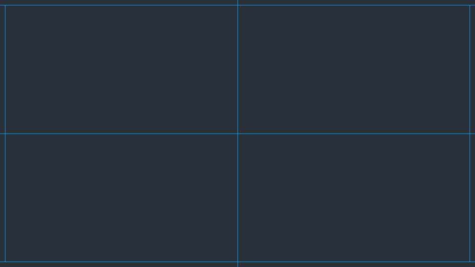
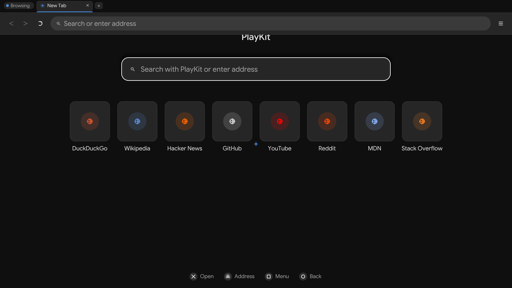
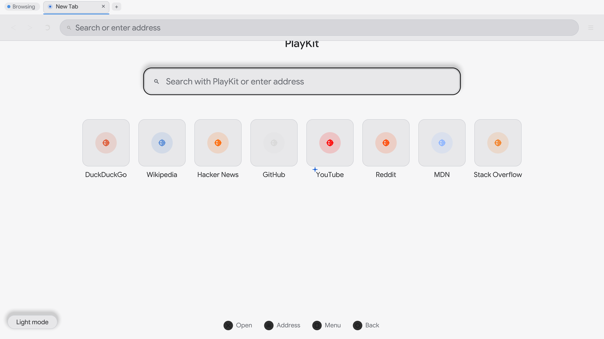
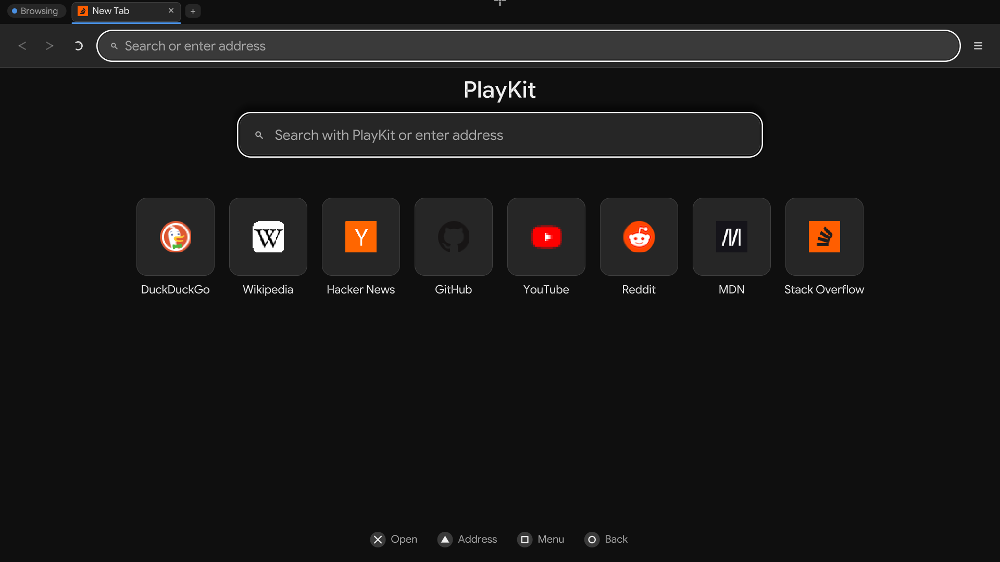
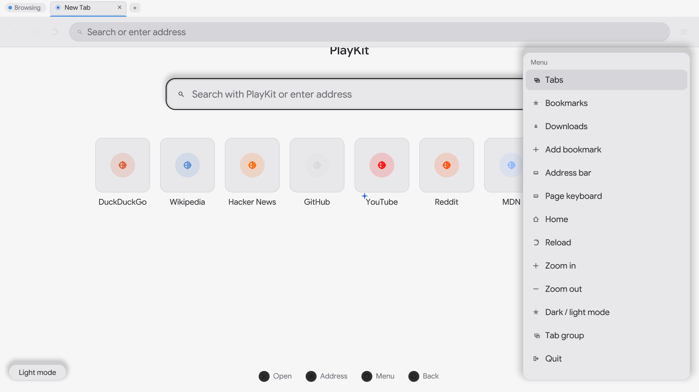
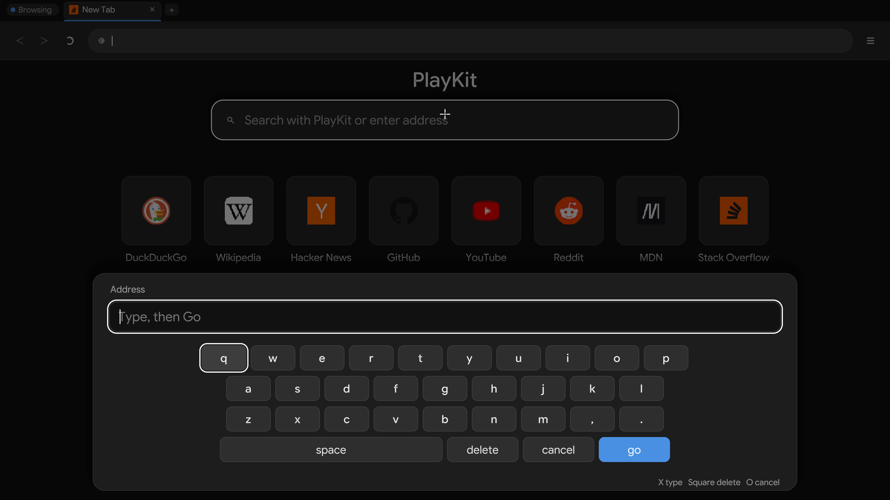
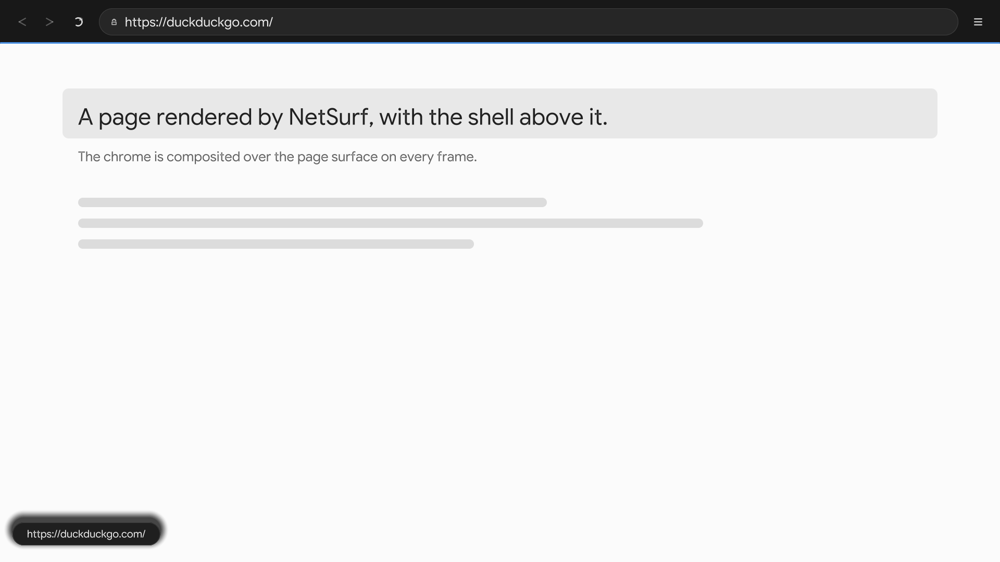

PlayKit
WebKit browser for PS5. Build checklist, updated as work lands. Last update: 2026-11-01 16:24 UTC.
console verifiedPlayKit builds, signs, and deploys as a signed FSELF. GitHub Actions builds every push; the run for 2392d0e passed. The PlaySurf browser shell is integrated: home screen with fetched favicons (all 8 sites, YouTube included), Firefox-style tab strip with tab groups, dark/light theme toggle, controller keyboard, menu, and two pointers: a crosshair that stays in the chrome and a ring page cursor that clicks the webpage. Deploy verified on the console at 10.15.175.8:2121: PlayKit launched and reached "entering run loop". JavaScriptCore build is running locally: 672 of 2,426 targets, no errors, after fixing the ICU prefix, the CMake find root and the char8_t configuration.
Calculating progress…
JavaScriptCore build
This machine
Waiting for build data…
Refreshes itself every 10 seconds.
GitHub Actions
No build published yet…
The workflow publishes its own progress.
Done and verified
- Reviewed PlaySurf source and buildNetSurf 3.11 port. Confirmed reusable VideoOut, pad, heap, curl, download code.done
- Picked engine versionWebKit 2.48.0 source, sparse checkout in third_party/webkit.done
- PS5 CMake toolchaincmake/ps5-toolchain.cmake. Clang 18, lld, PS5 payload SDK.done
- WebKit build system accepts PlayStationSource/cmake/WebKitCommon.cmake maps CMAKE_SYSTEM_NAME=PlayStation to a Unix build.done
- Host build tools installedcmake, ninja, ruby, perl modules, autoconf, libtool, ICU dev tools.done
- Host ICU 76.1 tools builtgenrb, pkgdata and the rest built from bundled ICU source for cross build.done
- PS5 libc shimplatform/ps5_compat.c adds pthread_cond_clockwait, timespec_get (required by libc++).done
- ICU 76.1 static libraries for PS5libicuuc, libicui18n, libicudata built for console toolchain incl. data archive.done
- Pixman 0.42.2 for PS5Static library built and installed under build/ps5.done
- Cairo 1.16.0 for PS5Image, PNG, FreeType, Fontconfig backends; no X11/EGL/GL. Static library installed.done
- libwpe 1.16.2 for PS5Static library built, xkbcommon disabled, EGL optional. Installed under build/wpe.done
- libpas portability fixesLock naming compiled out; sysinfo path skipped on PlayStation; memory-extra.h shim.done
- SDKs thoroughly readps5-payload-sdk, ps5-native-app-boilerplate, ps5-opengl (EGL facade, Gallium driver, pkg-config/CMake, app_heap sceLibcMspace), PS5_Vulkan (runtime/libc.prx, ps5-native-tool, tools/adapt-opengl-sdk.sh, tools/rebuild-libc.sh).done
- SDK choiceps5-native-app-boilerplate (PlaySurf approach), not ps5link-sdk. ps5link-sdk C++ untested and lacks TLS; WebKit is C++ heavy.done
- Graphics backendps5-opengl: OpenGL 4.6 Core via EGL, Mesa/Gallium PS5 driver, passes full GL 4.6 CTS. Replaces software Cairo rendering plan.done
- libc.prx sourcePS5_Vulkan runtime/libc.prx: clean-room signed module (SHA-256 e6ff45d1...), validated on firmware 6.02 and 12.70. Generated by tools/rebuild-libc.sh.done
- Console online184.145.228.235 reachable on 9295/9021/2121. Remote Play works, ftpsrv and elfdlr responding. Console testing unblocked.done
- Native app entry point and lifecyclesrc/main.c: int main(void), sceSystemServiceHideSplashScreen, run loop, sceSystemServiceLoadExec("exit") on quit. Fatal paths no longer return from main: the startup object then calls libc exit(), which raises SIGSYS (CE-108255-1).done
- Platform integrationps5_heap.c (sceLibcMspace ~384 MiB), ps5_video.c (two 16 MiB tiled RGBA8 buffers in WC direct memory, registered with VideoOut, vblank flips), ps5_pad.c (scePad via the logged-in user). All verified on the console.done
- Native app build systemMakefile + build.sh: compiles, links with prospero-lld, signs a valid FSELF, produces app folder dist/PPSA90002/. Links the console libc module (libSceLibcInternal) instead of whole-archiving payload libc.a, which dragged in unresolvable weak dlfcn imports. ps5-opengl SDK linking wired in (libPS5OpenGL.a, libSceAgc*, SceVideoOut, kernel_web, SceSystemService, -u,ps5_agc_gate2_run). libc.prx copied into runtime/ and sce_sys assets packaged.done
- Signed eboot.binbuild/host/ps5-native-tool is built from local tooling/native sources and signs eboot.bin. Converter validates the image: 12 segments, authority 0x3100000000000002, integrity valid, FreeBSD ABI 2, type 0xFE10. Signing failures now abort the build instead of silently deploying an unsigned ELF.done
- Homebrew starter reviewReviewed MiladRTX/ps5-homebrew-starter: same ps5-native-app-boilerplate tooling, plus APP_IMPORT_STUBS (link-only stubs for system sprx missing from the SDK) and a safe FTP deploy script. Both ported; APP_IMPORT_STUBS is the path for sceCommonDialogInitialize and other system imports.done
- FTP deploy toolingtools/deploy.sh now exists. make deploy PS5_HOST=<console> builds, uploads atomically, publishes eboot.bin and param.json last, and verifies both. make undeploy removes only this title.done
- Runs on the consoleSigned FSELF launches from /data/homebrew/PPSA90002/. Console log reaches "entering run loop": heap 384 MiB, pad opened as user 518282432, state dir ready, diagnostic renderer active. Screen shows the dark slate frame with blue border and crosshair. Fixed along the way: unsigned ELF launches, SIGSYS/CE-108255-1 from libc exit() after a pad failure, and black scanout from unregistered VideoOut buffers.done
- Browser shell integratedPorted from PlaySurf: src/ui.c (SDF text, rounded boxes, icons) and src/browser_ui.c (chrome, home screen, address bar, controller keyboard, menu, tabs, bookmarks, downloads). Same pad ABI, same RGBA frame, no OpenGL. Fonts baked from Google Sans and DejaVu, packaged under assets/fonts. Host test renders every screen and passes; console run pending.done
- Favicon fetchersrc/favicons.c / .h: async libcurl worker fetches /favicon.ico (https then http), decodes ICO/PNG/DIB, scales to 64x64, caches RGBA under /download0/favicons. Worker stays alive on a condition variable so prefetches queued after init are served. Home tiles draw the fetched icon with a globe fallback.done
- Tab strip + tab groupsFirefox-style strip above the chrome bar: group chip ("Browsing"), tabs with favicon + close button, "+" new-tab button, and a colored underline under the group's tabs. Groups toggle via the menu ("Tab group"). D-pad UP from chrome enters tabs; DOWN returns. Virtual cursor can click tabs, close, or new tab.done
- Dark / light themeui_light and ui_theme in src/ui.c; menu item "Dark / light mode" toggles. Chrome, home, menu, panels, tab strip and status pill all re-theme. PlayKit brand appears above the search bar on the home screen.done
- Virtual cursor / crosshairLeft stick moves a crosshair over the UI; the touchpad button or Cross clicks at the cursor position. Cross only clicks at the cursor once the stick has moved it, so D-pad navigation still works first. Works on home tiles, search bar, tab strip, chrome buttons. Always drawn on top.done
- Two pointers: crosshair and page cursorThe shell crosshair is confined to the chrome while a page is up; pushing the left stick down past its bottom edge hands over to a ring page cursor confined to the page surface, and pushing up at the top hands back. A page click is delivered through
browser_ui_take_clickandwebkit_mouse_click, so it can never reach a chrome control.make test-unitnow buildssrc/browser_ui.candsrc/ui.con the host against console stubs and drives the pad through navigation, both handovers, click routing and the back button; all checks pass.done - All app files stay in the game folder
src/ps5_paths.cpicks the first folder it can actually write to:/app0(the game folder/data/homebrew/PPSA90002), then/data/homebrew/PPSA90002, then/download0. Verified on the console:playkit.logandfavicons/with 8.rgbaicons now appear in the game folder.PLAYKIT_STATE_DIRoverrides it for host builds.done - Favicons on the consoleAll eight home tiles show fetched icons, YouTube and Wikipedia included, decoded from 32bpp and 4bpp ICOs. Console log:
favicon: <host> readyfor every site; cache under<state dir>/favicons.done - Console detected and launched at 10.15.175.8ShadowMountPlus payload resent to the loader on port 9021: library resynced, 18 titles, PlayKit appears on the PS5 home screen. Deployed from
dist/PPSA90002/and launched over Remote Play.done
In progress
- JSC static-lib buildProgress: 672 of 2,426 ninja targets, no errors.
tools/build-jsc.shruns host ICU, installs cross ICU intobuild/icu-ps5/install(static only), then configures JSCOnly and runsninja -j1. Fixed: the script never exportedPS5_PAYLOAD_SDK;CMAKE_FIND_ROOT_PATHhid the ICU prefix fromFindICU; and WebKit 2.48 needs the realchar8_t, so the PlayStationHAVE_MISSING_U8STRINGoverride and-fno-char8_twere removed. Log:/tmp/opencode/jsc-build27.log.active - Cursor movement over Remote PlayThe app receives stick data (
pad: stick raw 255,128in the console log), but the Remote Play daemon sends a single stick sample per call, so the cursor moves once and stops. Real DualSense input repeats every frame. Left for later UI work; Cross now clicks at the cursor only after the stick moved it.active - Phased WebKit integrationDiagnostic screen paints directly to frame buffer via VideoOut. Next: link libJavaScriptCore.a + WPEWebKit for real page rendering. Full WebKit2 multiprocess deferred.active
Not started
- WebKit integrationWKPagePaint into OpenGL render target / TextureMapper, eglSwapBuffers present, single-process WebKit.todo
- Downloads, cookies, storageWebKit data stores under /download0.todo
Open problems
- Sony private librariesSceCairoForWebKit → Cairo upstream + libwpe. WebKitRequirements → build dependencies from source. ProcessLauncher → WebKit Unix ProcessLauncher or custom PS5 launcher. libpsl already in PS5 payload SDK.active
Research notes
Process launch. Sony's UI process calls a private PlayStation::launchProcess from WebKitRequirements. Public replacements use rfork_thread a template eboot, attach with ptrace, replace image with target ELF. Read ps5-payload-dev/elfldr (elfldr_spawn), shsrv, soniciso/sonicloader. Some builds use sceKernelSpawn (needs libkernel_sys, elevated privileges).
libwpe. 1.16.2 only needs EGL headers when EGL dependency found; with -Denable-xkb=false and no EGL package it still builds. Sony's SceWPE backend is private, so the WebKit PlayStation port needs either that backend or a local ProcessLauncher plus open libwpe.
Rendering. Sony MiniBrowser paints with WKPagePaint into a Cairo ARGB image surface and copies dirty rectangle to VideoOut. No GL needed. BlackBearReloaded ps5-opengl (Mesa/Gallium OpenGL 4.6 + EGL) is the option for accelerated compositing; Vulkan alone does not satisfy WebKit's EGL/GLES texture mapper.
Sources. Sony OSS WebKit: neonmodder123/PS5-WebKit-11.x. Process launch: github.com/ps5-payload-dev/elfldr. GL stack: github.com/BlackBearReloaded/ps5-opengl.
Build facts
Compiler: clang-18, target x86_64-sie-ps5, linker prospero-lld. SDK: /root/projects/PlaySurf/.deps/native/ps5-payload-sdk. ICU prefix: /root/projects/PlayKit/build/icu-ps5.
Disk free: about 13 GB. RAM: 7 GB (tight for full WebKit build). JSC build uses -j1 to avoid OOM.
Renders


src/.




- App diagnostic screenDark slate frame, blue border, centre crosshair, drawn at 1920x1080, tiled into a registered VideoOut buffer and flipped at vblank. Visible on the console after replacing the signed eboot.done
- Browser shell screensHome (dark and light), tabs, keyboard, menu and page view rendered at 1920x1080 by tests/host/test_browser_ui.c against the PlayKit sources. PPM output converted to PNG for this page.done
Static page served on port 80. Checked items are built and locally verified; on-console results are stated per item.